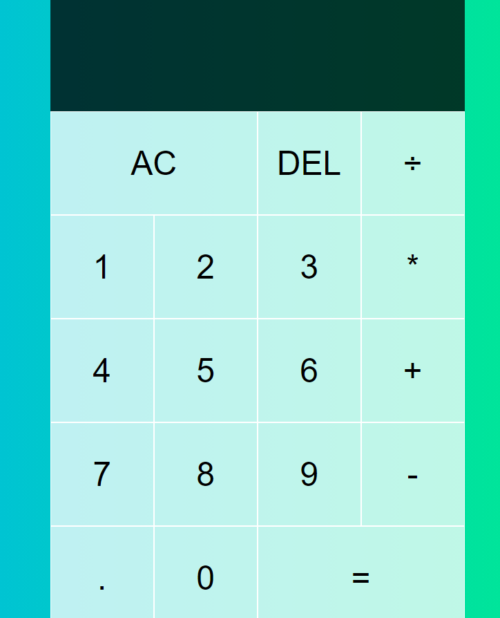

Built with HTML CSS and Javascript
Before I ever wrote a line of code or watched a tutorial, I came across a video on how to build a calculator. There is nothing original about it other than the background color, but it was the first thing I coded and it gave me a rush. I showed it to anyone who would give me the time of day and til this day is one of the proudest moments Ive had in regaurds to changing my career towards web developement.Come check out
MY CALCULATORWith limited knowledge of programming, I was directed to start with the basics of HTML, CSS and Javascript. The best way to understand this relationship is to build a project and the calculator was the least daunting.
After this build I would not say I had a full grasp of Javascript as a language, but I was able to understand its implementation within the contect of a file. The understanding that the Javascript is where the front end and back end blend together in a way while the CSS and HTML were rather simple to grasp.
This project taught me the scope of programming more than anything. Terms I had never heard before and aspects basic computer knowledge that I never knew to ask about. I also realized the fundamental split between front-end and back-end and where they meet and often overlap.